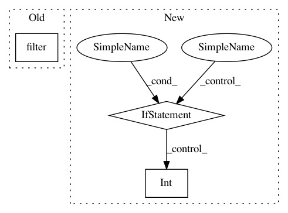

21994919156aac15558f77555538346fb702bcbc,autokeras/nn/graph.py,Graph,_get_pooling_layers,#Graph#Any#Any#,264
Before Change
layer_list = []
node_list = [start_node_id]
self._depth_first_search(end_node_id, layer_list, node_list)
return filter(lambda layer_id: is_layer(self.layer_list[layer_id], "Pooling"), layer_list)
def _depth_first_search(self, target_id, layer_id_list, node_list):
Search for all the layers and nodes down the path.
After Change
layer = self.layer_list[layer_id]
if is_layer(layer, "Pooling"):
ret.append((layer.kernel_size, layer.stride, layer.padding))
elif is_layer(layer, "Conv") and layer.stride != 1:
ret.append((int((layer.kernel_size + 1) / 2), layer.stride, 0))
return ret
def _depth_first_search(self, target_id, layer_id_list, node_list):
In pattern: SUPERPATTERN
Frequency: 4
Non-data size: 3
Instances
Project Name: keras-team/autokeras
Commit Name: 21994919156aac15558f77555538346fb702bcbc
Time: 2018-11-26
Author: jhfjhfj1@gmail.com
File Name: autokeras/nn/graph.py
Class Name: Graph
Method Name: _get_pooling_layers
Project Name: NifTK/NiftyNet
Commit Name: 898a9387984d8434245618eda47a6e3f052bbba0
Time: 2018-03-20
Author: wenqi.li@ucl.ac.uk
File Name: niftynet/utilities/user_parameters_regex.py
Class Name:
Method Name: match_array
Project Name: NifTK/NiftyNet
Commit Name: 14f7fd88d24cf31a466726fc89060a4b7778e2e6
Time: 2017-09-04
Author: wenqi.li@ucl.ac.uk
File Name: niftynet/engine/image_window.py
Class Name:
Method Name: _read_window_sizes